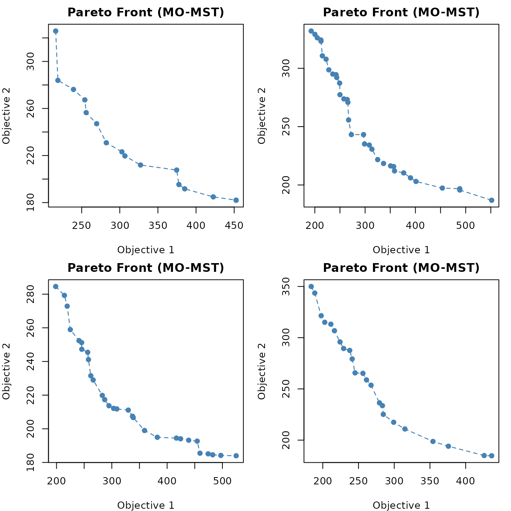
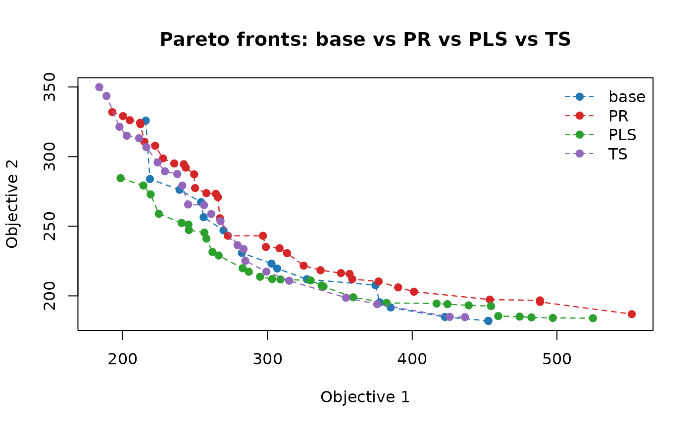
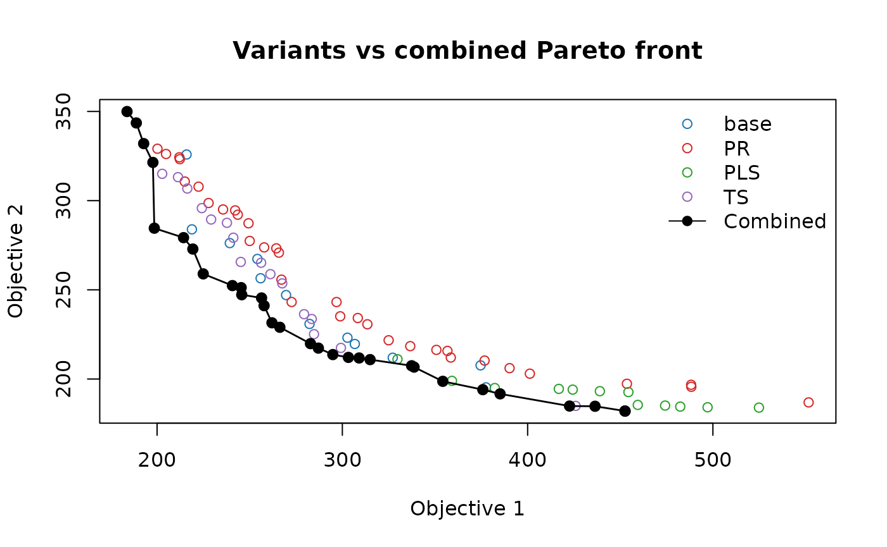
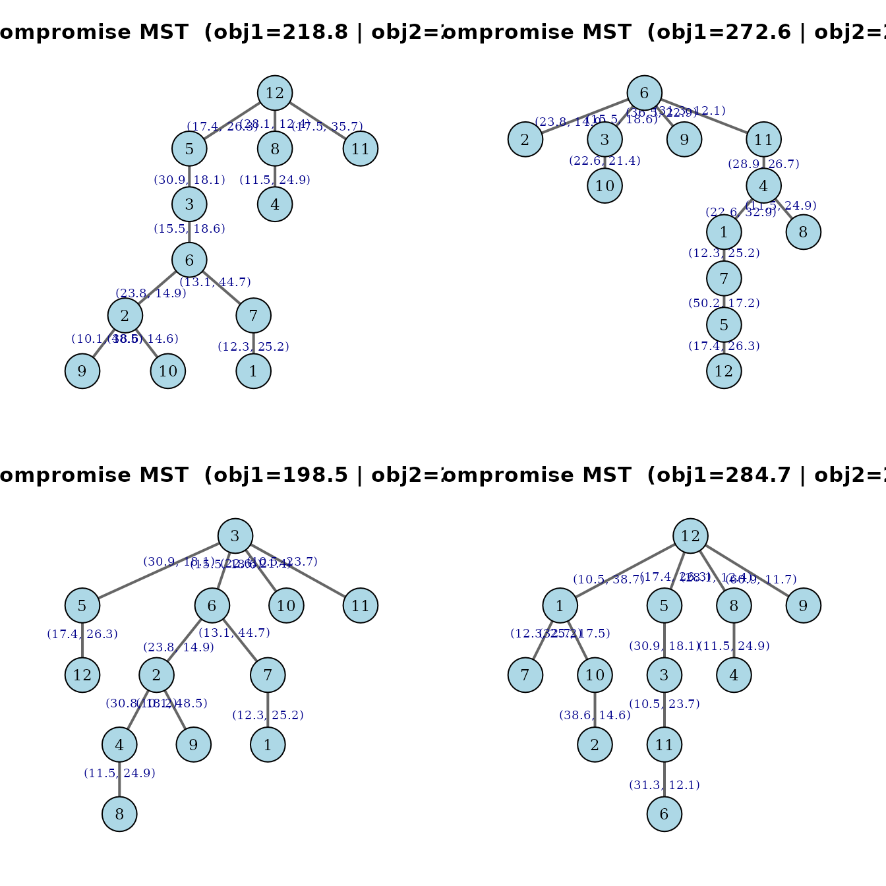
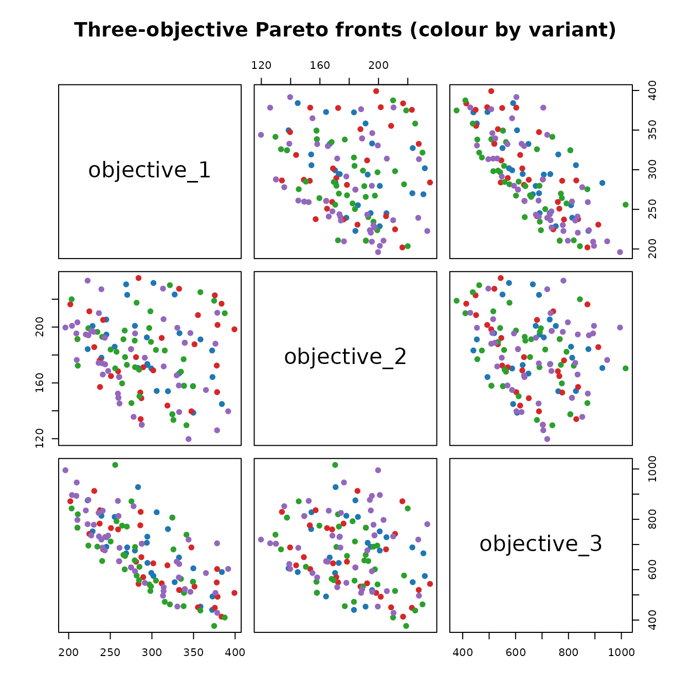

Comparing the Four MO-MST Variants
Jorge A. Parraga-Alava
2026-06-02
Source:vignettes/momst-variants.Rmd
momst-variants.RmdGoal of this vignette
The run_momst() function implements four variants of the
Multi-Objective Minimum Spanning Tree solver. They share the same
NSGA-II backbone and differ only in the local search
operator that is applied to the current Pareto front after each
generation:
| Variant | Local search | Role inside NSGA-II |
|---|---|---|
"base" |
None | Reference: pure NSGA-II without any intensification step. |
"PR" |
Path Relinking | Builds intermediate solutions between every pair of fronts. |
"PLS" |
Pareto Local Search | Explores the neighbourhood of every unexplored front member. |
"TS" |
Tabu Search | Generates neighbours while forbidding recently visited ones. |
Below, the four variants are executed on the same instance with the same NSGA-II hyper-parameters, so any difference in the resulting Pareto fronts is attributable only to the local search component. The goal is not to declare one variant the winner (relative performance depends on the instance and the budget), but to show how to obtain results from each variant and how to compare them.
Reference
The four variants below match the algorithmic description introduced in:
Parraga-Alava, J., Inostroza-Ponta, M., and Dorn, M. (2017). “Using local search strategies to improve the performance of NSGA-II for the Multi-Criteria Minimum Spanning Tree problem”. In 2017 IEEE Congress on Evolutionary Computation (CEC), pages 1818 to 1825. IEEE. doi:10.1109/CEC.2017.7969432
The paper reports that, on the instances tested by the authors, the PLS variant provides the best trade-off between diversity and coverage of the search space. The numerical comparison shown below will reproduce, on a smaller scale, the kind of analysis carried out in that work.
Shared experimental setup
The instance, the population size, and the seed are fixed once so the four variants start from an identical state.
# Problem size and number of objectives
n_nodes <- 12
n_obj <- 2
# A single instance reused by all variants
shared_instance <- generate_instance(
n = n_nodes,
num_obj = n_obj,
range_a = c(10, 100),
range_b = c(10, 50),
seed = 2026
)
# NSGA-II hyper-parameters shared by every run
common_args <- list(
instance = shared_instance,
n = n_nodes,
num_obj = n_obj,
iterations = 3, # three independent runs per variant
pop_size = 40,
tour_size = 2,
cross_rate = 0.80,
mut_rate = 0.10,
max_generations = 50,
convergence_window = 10,
verbose = FALSE,
seed = 123
)A small wrapper makes the per-variant call shorter:
Run all four variants
# Pure NSGA-II without local search
res_base <- run_variant("base")
# NSGA-II + Path Relinking
res_PR <- run_variant("PR")
# NSGA-II + Pareto Local Search
res_PLS <- run_variant("PLS")
# NSGA-II + Tabu Search
res_TS <- run_variant("TS")Each result is a list with the same structure described in the
Getting Started vignette. We are particularly interested in
global_pareto, the non-dominated union of the fronts
obtained across all independent runs.
Inspecting the Pareto fronts numerically
For every variant we collect the objective values of every solution on its global Pareto front:
# Helper: extract just the objective columns from the global Pareto front
extract_obj <- function(res, label) {
front <- res$global_pareto
data.frame(
variant = label,
objective_1 = front$objective_1,
objective_2 = front$objective_2
)
}
fronts_all <- rbind(
extract_obj(res_base, "base"),
extract_obj(res_PR, "PR"),
extract_obj(res_PLS, "PLS"),
extract_obj(res_TS, "TS")
)
# Number of non-dominated solutions returned by each variant
table(fronts_all$variant)
#>
#> base PLS PR TS
#> 16 30 34 23A quick numerical summary of each front:
# Best value reached per objective and number of non-dominated points
summary_table <- do.call(rbind, lapply(
split(fronts_all, fronts_all$variant),
function(df) {
data.frame(
variant = unique(df$variant),
n_solutions = nrow(df),
best_obj1 = round(min(df$objective_1), 2),
best_obj2 = round(min(df$objective_2), 2),
mean_obj1 = round(mean(df$objective_1), 2),
mean_obj2 = round(mean(df$objective_2), 2)
)
}
))
rownames(summary_table) <- NULL
summary_table
#> variant n_solutions best_obj1 best_obj2 mean_obj1 mean_obj2
#> 1 base 16 215.91 181.99 321.10 230.38
#> 2 PLS 30 198.51 183.98 334.27 219.51
#> 3 PR 34 192.77 186.89 303.85 257.03
#> 4 TS 23 183.78 184.75 270.31 262.22The columns mean:
-
n_solutions: how many non-dominated trees the variant returns. -
best_obj1: the minimum value of objective 1 found across the front. -
best_obj2: the minimum value of objective 2 found across the front. -
mean_obj1: the average value of objective 1 over the front (a rough proxy for the “centre of mass” of the front along that axis). -
mean_obj2: same as above, but for objective 2.
Note that more solutions does not automatically mean better quality: a front with very few well-spread points can dominate a front with many crowded points.
Visual comparison of the four fronts
One panel per variant
The built-in plot helper draws one variant at a time:
op <- par(mfrow = c(2, 2), mar = c(4, 4, 2, 1))
plot_pareto_front(res_base); title(sub = "base")
plot_pareto_front(res_PR); title(sub = "PR")
plot_pareto_front(res_PLS); title(sub = "PLS")
plot_pareto_front(res_TS); title(sub = "TS")
Pareto fronts of the four variants (one panel per variant).
par(op)All variants superposed
A single plot with all four fronts is the most useful view for spotting dominance relationships and differences in coverage:
# Colour palette: one distinct colour per variant
palette_var <- c(base = "#1f77b4",
PR = "#d62728",
PLS = "#2ca02c",
TS = "#9467bd")
# Set plotting limits from the union of all fronts
xlim <- range(fronts_all$objective_1)
ylim <- range(fronts_all$objective_2)
plot(NA, NA, xlim = xlim, ylim = ylim,
xlab = "Objective 1", ylab = "Objective 2",
main = "Pareto fronts: base vs PR vs PLS vs TS")
# Draw each variant in its colour, connecting the points with a dashed line
for (v in names(palette_var)) {
sub <- fronts_all[fronts_all$variant == v, ]
sub <- sub[order(sub$objective_1), ]
lines(sub$objective_1, sub$objective_2,
col = palette_var[v], lty = 2, lwd = 1.2)
points(sub$objective_1, sub$objective_2,
col = palette_var[v], pch = 19)
}
legend("topright", legend = names(palette_var),
col = palette_var, pch = 19, lty = 2, bty = "n")
Pareto fronts of the four variants on the same axes.
A unified “ground truth” front
A simple way to evaluate the quality of every individual variant is to build the combined Pareto front out of all the solutions returned by the four variants and to check which variants contribute points to it.
# Pool every chromosome from every variant
all_chr <- rbind(
res_base$global_pareto[, 1:(n_nodes - 2), drop = FALSE],
res_PR$global_pareto[, 1:(n_nodes - 2), drop = FALSE],
res_PLS$global_pareto[, 1:(n_nodes - 2), drop = FALSE],
res_TS$global_pareto[, 1:(n_nodes - 2), drop = FALSE]
)
all_chr <- unique(as.matrix(all_chr))
# Evaluate the pooled set on the shared instance
ev <- compute_objectives(shared_instance, all_chr, n_obj,
lookup = build_weight_lookup(shared_instance, n_nodes, n_obj))
# Keep only the non-dominated solutions of the pooled set
ev <- non_dominated_crowding(ev, n_obj)
combined_front <- as.data.frame(ev[ev[, "rankingIndex"] == 1, , drop = FALSE])
# How many trees define the combined Pareto front
nrow(combined_front)
#> [1] 30
# Build a key for each tree on the combined front
key_combined <- apply(combined_front[, 1:(n_nodes - 2)], 1,
function(r) paste(as.integer(r), collapse = "_"))
# Same key for the front of every variant
key_of <- function(res) {
apply(res$global_pareto[, 1:(n_nodes - 2), drop = FALSE], 1,
function(r) paste(as.integer(r), collapse = "_"))
}
# Number of solutions of each variant that survive on the combined front
contribution <- data.frame(
variant = c("base", "PR", "PLS", "TS"),
contribution = c(
sum(key_of(res_base) %in% key_combined),
sum(key_of(res_PR) %in% key_combined),
sum(key_of(res_PLS) %in% key_combined),
sum(key_of(res_TS) %in% key_combined)
)
)
contribution
#> variant contribution
#> 1 base 4
#> 2 PR 1
#> 3 PLS 18
#> 4 TS 7The contribution column tells how many of the trees
returned by a variant remain non-dominated when faced with the union of
all variants. Variants whose contribution is close to the total size of
combined_front are producing front-quality solutions;
variants with low contribution return many solutions that are dominated
by trees found by the others.
plot(NA, NA, xlim = xlim, ylim = ylim,
xlab = "Objective 1", ylab = "Objective 2",
main = "Variants vs combined Pareto front")
for (v in names(palette_var)) {
sub <- fronts_all[fronts_all$variant == v, ]
sub <- sub[order(sub$objective_1), ]
points(sub$objective_1, sub$objective_2,
col = palette_var[v], pch = 1)
}
cf <- combined_front[order(combined_front$objective_1), ]
points(cf$objective_1, cf$objective_2,
col = "black", pch = 19, cex = 1.1)
lines(cf$objective_1, cf$objective_2, col = "black", lwd = 1.4)
legend("topright",
legend = c("base", "PR", "PLS", "TS", "Combined"),
col = c(palette_var, "black"),
pch = c(rep(1, 4), 19),
lty = c(rep(NA, 4), 1),
bty = "n")
Combined Pareto front (black) on top of each variant front.
Runtime cost
NSGA-II without local search is the fastest variant. Adding a local search increases the wall-clock time per iteration, but typically returns Pareto fronts that are closer to the true optimum or more densely populated.
data.frame(
variant = c("base", "PR", "PLS", "TS"),
elapsed_seconds = round(c(res_base$elapsed,
res_PR$elapsed,
res_PLS$elapsed,
res_TS$elapsed), 2)
)
#> variant elapsed_seconds
#> 1 base 2.21
#> 2 PR 7.45
#> 3 PLS 7.09
#> 4 TS 3.33These times are not benchmarks: they depend on the size of the instance, the chosen hyper-parameters, and the hardware. They are reported here so that the user can decide whether the additional cost of a local search is justified on a particular use case.
Picking a best-compromise tree per variant
For each variant, the spanning tree that minimises the sum of all
objectives can be plotted with plot_best_tree(). This
produces an igraph plot where every edge is labelled with
its cost in each objective:
if (requireNamespace("igraph", quietly = TRUE)) {
op <- par(mfrow = c(2, 2), mar = c(2, 2, 3, 2))
plot_best_tree(res_base, n = n_nodes); title(sub = "base")
plot_best_tree(res_PR, n = n_nodes); title(sub = "PR")
plot_best_tree(res_PLS, n = n_nodes); title(sub = "PLS")
plot_best_tree(res_TS, n = n_nodes); title(sub = "TS")
par(op)
} else {
message("Install 'igraph' to plot the best-compromise trees.")
}
Best-compromise spanning tree of each variant.
Three-objective example for every variant
The same comparison can be replicated when there are three
objectives. The only change is num_obj = 3 and the
additional weight range range_c.
common_3 <- list(
n = 9,
num_obj = 3,
iterations = 2,
pop_size = 30,
max_generations = 30,
range_a = c(10, 100),
range_b = c(10, 50),
range_c = c(30, 200),
convergence_window = 8,
verbose = FALSE,
seed = 555
)
run_variant_3 <- function(variant) {
do.call(run_momst, c(common_3, list(variant = variant)))
}
res3_base <- run_variant_3("base")
res3_PR <- run_variant_3("PR")
res3_PLS <- run_variant_3("PLS")
res3_TS <- run_variant_3("TS")
# Numerical summary across the three objectives
summary_3 <- do.call(rbind, lapply(
list(base = res3_base, PR = res3_PR, PLS = res3_PLS, TS = res3_TS),
function(res) {
f <- res$global_pareto
c(n = nrow(f),
best_o1 = round(min(f$objective_1), 2),
best_o2 = round(min(f$objective_2), 2),
best_o3 = round(min(f$objective_3), 2))
}
))
summary_3
#> n best_o1 best_o2 best_o3
#> base 28 222.83 137.52 440.42
#> PR 33 201.97 129.99 413.48
#> PLS 37 203.56 129.64 376.79
#> TS 42 196.06 119.77 428.58
# Combine the three-objective fronts and project them pairwise
df3 <- rbind(
data.frame(variant = "base", res3_base$global_pareto[, c("objective_1","objective_2","objective_3")]),
data.frame(variant = "PR", res3_PR$global_pareto[, c("objective_1","objective_2","objective_3")]),
data.frame(variant = "PLS", res3_PLS$global_pareto[, c("objective_1","objective_2","objective_3")]),
data.frame(variant = "TS", res3_TS$global_pareto[, c("objective_1","objective_2","objective_3")])
)
# Colour by variant
col_v <- palette_var[df3$variant]
pairs(df3[, c("objective_1", "objective_2", "objective_3")],
col = col_v, pch = 19,
main = "Three-objective Pareto fronts (colour by variant)")
Pairwise projection of the three-objective fronts across variants.
Summary
- Every solver variant is invoked through the same
run_momst()function; only thevariantargument changes. -
"base"provides the cheapest reference solver."PR","PLS", and"TS"add an intensification step that often improves the front at the cost of a longer runtime. - The objective values of every non-dominated tree are returned in
result$global_pareto, along with its Prufer chromosome. - The package ships two plotting helpers,
plot_pareto_front()andplot_best_tree(), and exposes all of its internals (lookup tables, Prufer decoding, NSGA-II helpers, and the three local-search operators) as separate exported functions so they can be used independently or embedded in custom experiments.
For the canonical workflow on a single example, see the Getting Started vignette.